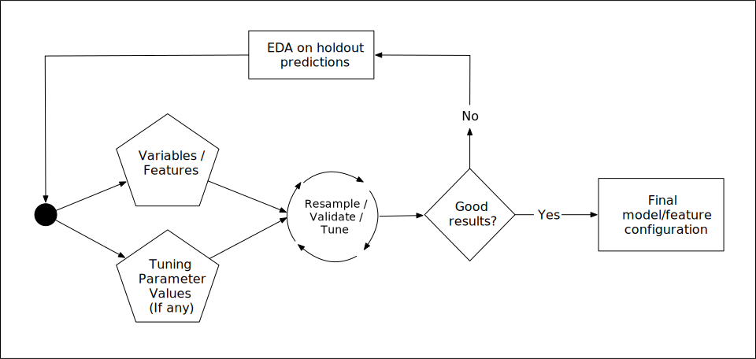

format:
html:
theme:
light: [simplex, aml4td.scss]
dark: [cyborg, aml4td-dark.scss]light-dark-test
1 Introduction
This is an example repo that is used to test (and document) methods for enabling light/dark mode in Quarto documents.
This page used Quarto version 1.6.39.
Our CSS for light and dark mode can be found in aml4td.scss and aml4td-dark.scss, respectively. In Quarto, set these as
Doing this enables the switch in the upper left-hand side of this page (to the right of light-dark-test and above the search bar).
1.1 ggplot2
This repo is to test and modify the instructions for light/dark modes from this blog post by Mickaël Canouil.
We set the knitr options to use a figures directly to place images.
Instead of using the default theme for light mode, I’ve created a plot device function that uses a transparent theme. I also like the dark theme provided by ggdark::dark_theme_grey() so I will use that below.
Here are our light and dark custom devices:
library(svglite)
lightsvglite <- function(file, width, height, ...) {
on.exit(ggplot2::reset_theme_settings())
theme_transparent <- function(...) {
ret <- ggplot2::theme_bw(...)
transparent_rect <- ggplot2::element_rect(fill = "transparent", colour = NA)
ret$panel.background <- transparent_rect
ret$plot.background <- transparent_rect
ret$legend.background <- transparent_rect
ret$legend.key <- transparent_rect
ret
}
ggplot2::theme_set(theme_transparent())
ggsave(
filename = file,
width = width,
height = height,
dev = "svg",
bg = "transparent",
...
)
}
darksvglite <- function(file, width, height, ...) {
on.exit(ggplot2::reset_theme_settings())
ggplot2::theme_set(ggdark::dark_theme_grey())
ggsave(
filename = file,
width = width,
height = height,
dev = "svg",
bg = "transparent",
...
)
}Now let’s make a plot and see how it turns out:

1.2 gt tables [unresolved]
gt has a function for dark mode and a general function to style.
Not sure how to pick up colors from css and there is an unanswered issue on this in GitHub.
mtcars %>%
head() %>%
gt()| mpg | cyl | disp | hp | drat | wt | qsec | vs | am | gear | carb |
|---|---|---|---|---|---|---|---|---|---|---|
| 21.0 | 6 | 160 | 110 | 3.90 | 2.620 | 16.46 | 0 | 1 | 4 | 4 |
| 21.0 | 6 | 160 | 110 | 3.90 | 2.875 | 17.02 | 0 | 1 | 4 | 4 |
| 22.8 | 4 | 108 | 93 | 3.85 | 2.320 | 18.61 | 1 | 1 | 4 | 1 |
| 21.4 | 6 | 258 | 110 | 3.08 | 3.215 | 19.44 | 1 | 0 | 3 | 1 |
| 18.7 | 8 | 360 | 175 | 3.15 | 3.440 | 17.02 | 0 | 0 | 3 | 2 |
| 18.1 | 6 | 225 | 105 | 2.76 | 3.460 | 20.22 | 1 | 0 | 3 | 1 |
1.3 kableExtra tables
This package does have the ability to pick up colors from CSS
mtcars %>%
head() %>%
kbl() %>%
kable_styling(bootstrap_options = "responsive", full_width = FALSE)| mpg | cyl | disp | hp | drat | wt | qsec | vs | am | gear | carb | |
|---|---|---|---|---|---|---|---|---|---|---|---|
| Mazda RX4 | 21.0 | 6 | 160 | 110 | 3.90 | 2.620 | 16.46 | 0 | 1 | 4 | 4 |
| Mazda RX4 Wag | 21.0 | 6 | 160 | 110 | 3.90 | 2.875 | 17.02 | 0 | 1 | 4 | 4 |
| Datsun 710 | 22.8 | 4 | 108 | 93 | 3.85 | 2.320 | 18.61 | 1 | 1 | 4 | 1 |
| Hornet 4 Drive | 21.4 | 6 | 258 | 110 | 3.08 | 3.215 | 19.44 | 1 | 0 | 3 | 1 |
| Hornet Sportabout | 18.7 | 8 | 360 | 175 | 3.15 | 3.440 | 17.02 | 0 | 0 | 3 | 2 |
| Valiant | 18.1 | 6 | 225 | 105 | 2.76 | 3.460 | 20.22 | 1 | 0 | 3 | 1 |
1.4 tidytable tables
This package does have the ability to pick up colors from CSS
mtcars %>%
head() %>%
tt(theme = "bootstrap")| mpg | cyl | disp | hp | drat | wt | qsec | vs | am | gear | carb |
|---|---|---|---|---|---|---|---|---|---|---|
| 21.0 | 6 | 160 | 110 | 3.90 | 2.620 | 16.46 | 0 | 1 | 4 | 4 |
| 21.0 | 6 | 160 | 110 | 3.90 | 2.875 | 17.02 | 0 | 1 | 4 | 4 |
| 22.8 | 4 | 108 | 93 | 3.85 | 2.320 | 18.61 | 1 | 1 | 4 | 1 |
| 21.4 | 6 | 258 | 110 | 3.08 | 3.215 | 19.44 | 1 | 0 | 3 | 1 |
| 18.7 | 8 | 360 | 175 | 3.15 | 3.440 | 17.02 | 0 | 0 | 3 | 2 |
| 18.1 | 6 | 225 | 105 | 2.76 | 3.460 | 20.22 | 1 | 0 | 3 | 1 |
1.5 Including pre-made images
First, you’ll have to made light and dark versions of the image.
Garrick Aden-Buie came up with a solution to this using CSS. You can add the following to your scss file:
.quarto-light .when-quarto-dark {
display: none;
}
.quarto-dark .when-quarto-light {
display: none;
}and use this with fenced divs:
::: {#fig-premade-image}
::: {.when-quarto-light}
code/markup to include light image
:::
::: {.when-quarto-dark}
code/markup to include dark image
:::
The caption for both light and dark plots.
:::Here’s a working example using existing code:


1.6 shinylive
The Quarto extension
Some of this falls on the bslib package function input_dark_mode(), the thematic package’s thematic_shiny(), as well as theming for ggplot visualizations (I’m not sure about lattice or base R plotting code).
First, in your UI code, bslib::input_dark_mode() puts a button in your app to move between light and dark modes.
Second, adding thematic::thematic_shiny() to your app (anywhere) will allow shiny to change the appearance of the results depending on the light.dark mode.
Finally, it also helps to use a ggplot theme that has transparency in the background elements (as we did above) and choosing good colors that are both helpful to colorblindness but also work well in both dark and light mode.
1.6.1 An example
Here is an example of a shiny app that has a dark mode button and a ggplot visualization that changes with the mode.
#| label: fig-interaction-contours
#| viewerHeight: 600
#| standalone: true
#| echo: true
library(shiny)
library(ggplot2)
library(bslib)
library(thematic)
library(viridis)
# source("https://raw.githubusercontent.com/aml4td/website/dark-mode/R/shiny-setup.R")
ui <- page_fillable(
theme = bs_theme(), #<- this is new
padding = "1rem",
bslib::input_dark_mode(),
layout_columns(
fill = FALSE,
col_widths = breakpoints(xs = c(-2, 8, -2), sm = 4),
sliderInput(
"beta_1",
label = "Predictor 1 slope",
min = -4.0,
max = 4.0,
step = 0.5,
value = 1
),
sliderInput(
"beta_2",
label = "Predictor 2 slope",
min = -4.0,
max = 4.0,
step = 0.5,
value = 1
),
sliderInput(
"beta_int",
label = "Interaction slope",
min = -2.0,
max = 2.0,
step = 0.25,
value = 0.5
)
),
as_fill_carrier(plotOutput("contours"))
)
server <- function(input, output) {
# Not required but helps
theme_transparent <- function(...) {
ret <- ggplot2::theme_bw(...)
transparent_rect <- ggplot2::element_rect(fill = "transparent", colour = NA)
ret$panel.background <- transparent_rect
ret$plot.background <- transparent_rect
ret$legend.background <- transparent_rect
ret$legend.key <- transparent_rect
ret
}
theme_set(theme_transparent())
# ------------------------------------------------------------------------------
n_grid <- 100
grid_1d <- seq(-1, 1, length.out = n_grid)
grid <- expand.grid(A = grid_1d, B = grid_1d)
output$contours <-
renderPlot({
grid$outcome <-
input$beta_1 * grid$A + input$beta_2 * grid$B +
input$beta_int * grid$A * grid$B
p <-
ggplot(grid, aes(A, B)) +
coord_equal() +
labs(x = "Predictor 1", y = "Predictor 1")
if (length(unique(grid$outcome)) >= 15) {
p <- p +
geom_contour_filled(aes(z = scale(outcome)), bins = 15, show.legend = FALSE) +
scale_fill_viridis_d(option = "G")
}
print(p)
},
bg = NA
)
}
app <- shinyApp(ui, server)
thematic_shiny() #<- this is new
appUnfortunately, this requires a second click (and a pause) to have the shinylive app match the mode of the page.
1.7 Math
Math coloring appears to be picked up from css:
\[ \hat{y}_j = \mu_0 + (\bar{y}_j - \mu_0) \frac{\sigma^2_0}{\frac{1}{n} + \sigma^2_0} \]
However, if you use any \color invocations, the equation color is fixed across light/dark modes.
1.8 algorithms
The Quarto extension picks up the correct formatting.
\begin{algorithm} \begin{algorithmic} \State $\mathfrak{D}^{tr}$: training set of predictors $X$ and outcome $y$ \State $B$: number of resamples \State $M(\mathfrak{D}^{tr}, B)$: a mapping function to split $\mathfrak{D}^{tr}$ for each of $B$ iterations. \State $f()$: model pipeline \Procedure{Resample}{$\mathfrak{D}^{tr}, f, M(\mathfrak{D}^{tr}, B)$} \For{$b =1$ \To $B$} \State Partition $\mathfrak{D}^{tr}$ into $\{\mathfrak{D}_b^{fit}, \mathfrak{D}_b^{prd}\}$ using $M_b(\mathfrak{D}^{tr}, B)$. \State Train model pipeline $f$ on the analysis set to produce $\hat{f}_{b}(\mathfrak{D}_b^{fit})$. \State Generate assessment set predictions $\hat{y}_b$ by applying model $\hat{f}_{b}$ to $\mathfrak{D}_b^{prd}$. \State Estimate performance statistic $\hat{Q}_{b}$. \EndFor \State Compute reampling estimate $\hat{Q} = \sum_{b=1}^B \hat{Q}_{b}$. \Return $\hat{Q}$. \Endprocedure \end{algorithmic} \end{algorithm}